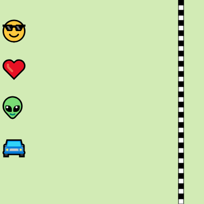

MEUS PROJETOS

PROJETO MONALISA
O projeto monalisa foi desenvolvido em linguagem de programação JavaScript utilizando a ferramenta P5.js. Nele foi trabalhado com mapeamente para que as pupilas do personagem sigam o cursor do mouse
PROJETO QUENTE-FRIO
O projeto QUENTE-FRIO foi desenvolvido na linguagem JavaScript com auxílio da ferramenta P5.js. Neste projeto foi utilizado comandos para calcular distância entre dois pontos e pitágoras

CORRIDA
O projeto de Corrida foi desenvolvido em linguagem de programação JavaScript utilizando a ferramenta P5.js. Nele foi trabalhado com mapeamente para que as pupilas do personagem sigam o cursor do mouse